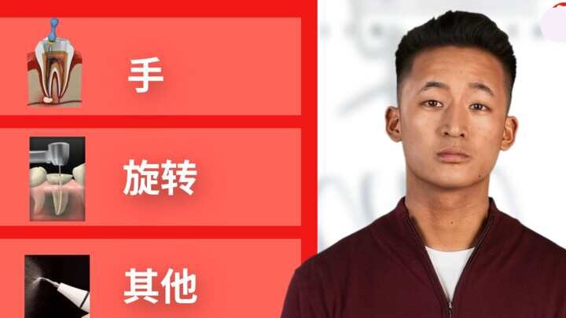
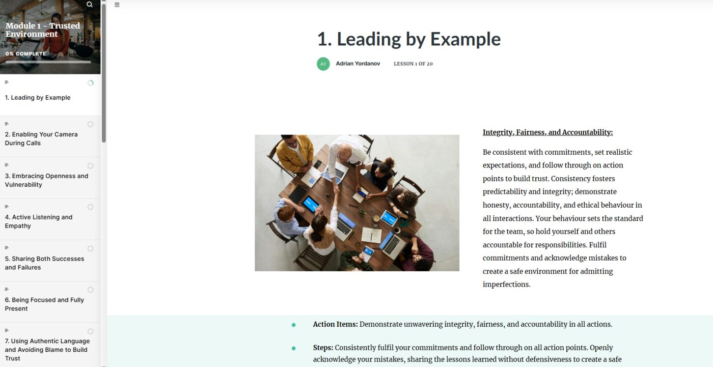

Learning Experience Design
Digital, instructor-led and blended journeys built around clear decisions, authentic practice and useful feedback.
- Storyboarding and curriculum architecture
- Rise 360, Storyline and Synthesia
- Assessment and activity design
Learning & Development Portfolio
I design digital, instructor-led and blended learning, align stakeholders around the real performance need, and manage projects from early discovery to launch.


Core focus
My strongest work sits where learning design, business performance and coordinated delivery meet.
Digital, instructor-led and blended journeys built around clear decisions, authentic practice and useful feedback.
I begin with the business need, examine the evidence and determine whether learning is the right response.
Complex learning work moves forward through clear scope, visible decisions and dependable stakeholder coordination.
Selected work
Each case study uses verified project facts. Company names remain visible, while sensitive internal content is excluded from the public samples.
Case study 01 · Septodont
An AI-enabled video learning suite for sales readiness, client education and international industry presentations, assembled from more than 300 individual scenes.
The brief
The organisation needed to prepare sales teams while also presenting its work to clients, prospective partners and audiences at international forums. Septodont experts supplied and validated the medical and product content.
Experience architectureShaped the information into concise teaser videos and one comprehensive learning asset.
AI video productionBuilt and assembled more than 300 scenes in Synthesia.
Expert collaborationWorked with medical SMEs and stakeholders through review and approval cycles.
Localization coordinationImplemented corrections supplied by local language specialists across eight versions.
Delivery model
Selected evidence
Sensitive product information has been removed from these public samples.
Evidence availableProduction scale, localization breadth and delivered learning assets. Post-launch audience and usage analytics were not available to the project team.
Case study 02 · Worldline · WLP FO Academy
A self-paced Rise 360 pathway that translates a shared vision and mission into observable behaviours, practical action items and structured assessment for current and newly appointed Scrum Masters.
The learning challenge
The programme needed to unpack trusted environments, Scrum Master stances, values, agile leadership, positive behavioural patterns and anti-patterns in a way that supported both onboarding and continuing development.
Shared directionVision and mission translated into clear learning outcomes.
Eight-module structureEach module focused on a distinct behavioural dimension.
Practical applicationAction items, positive patterns and anti-behavioural examples.
Knowledge validationEight module checks plus one comprehensive final assessment.
Selected evidence
Representative screens show the programme's lesson structure, practice design and application prompts.
A consistent onboarding pathway that makes agile leadership principles visible, discussable and actionable.
The finished programme combined structured learning, repeated checks for understanding and a final holistic assessment for both existing and future Scrum Masters.
Case study 03 · Worldline · 2024
A narrated Articulate Storyline course that introduces Worldline Pay Front Office, clarifies acceptance and acquiring processing, and visualises the flow of an online authorisation.
The design challenge
The audience needed to understand where WLP FO sits in the acquiring domain, how acceptance and acquiring processing differ, and what happens during an online authorisation. The design combines progressive explanation, labelled process visuals and interaction.
Content structureSequenced domain concepts from orientation to detailed transaction flow.
Visual explanationCreated process diagrams, comparisons and hover-based exploration.
Audio productionEdited, cleaned and synchronised supplied recordings across the complete course.
Expert reviewWorked with Italian process specialists through clarification and validation cycles.
Selected evidence
The selected screens show the course's visual range: introduction, process explanation, comparison, interaction and assessment.
Evidence availableThe full course build, interaction design and synchronised audio are represented here. Post-launch usage and performance data were not available.
Case study 04 · Worldline · 2023–2026
A Storyline course on the Payment Card Industry Software Security Framework and secure coding, originally created in 2023 and updated annually through the 2026 training edition.
The learning need
The course introduces the framework, places its requirements within the development process and checks understanding of secure coding and data protection practices. Annual review keeps the training edition aligned with validated internal content.
Original architectureBuilt the course structure, visual language, animations and quiz in Storyline.
Audience focusPrioritised practical relevance for developers and colleagues working with security and compliance.
Annual reviewImplemented approved content and version changes for each training cycle.
Controlled evidenceKept the public portfolio version free of internal workflow and system details.
Selected evidence
The title screen shows the validated source-course version exactly as used in the 2026 training edition.
Evidence availableOriginal development and annual update history are documented. Completion, assessment and performance data were not available for public reporting.
Case study 05 · Worldline · 2024
A one-month Storyline build covering periodical meetings, responsibilities, artefacts and rules for stakeholders who participate in or support the SAW process.
Selected evidence
The sample shows the course map, topic framing, detailed artefact guidance and a knowledge check.
Evidence availableThe portfolio shows the learning structure, visual treatment and assessment approach. No verified post-launch feedback or performance data were available.
Case study 06 · The Stars Group · 2019
A six-month blended enablement rollout that prepared agents and managers to adopt a new real-time support channel in Sofia, Dublin and Malta.
One capability, adapted locally
SofiaDirect instructor-led delivery, reinforced by the shared module.
DublinSelf-paced Storyline learning with local facilitation.
MaltaSelf-paced Storyline learning with local facilitation.
Rollout journey
The rollout expanded the service model and brought support teams closer to customers.
Stakeholders were highly satisfied with the implementation and reported strong operational results. Verified response-time, handling-time or CSAT figures are no longer available, so the portfolio does not assign numerical outcomes.
Case study 07 · The Stars Group · 2019
A multi-day internal programme for support agents with an affinity for training, followed by workplace application and a one-month development check-in.
Facilitation case
The content covered training needs, measurable goals, learner focus, delivery preparation, questioning and engagement. The main contribution was live facilitation: creating the conditions for practice, feedback and confident application.
Selected original materials · 2019
These are original materials, shown as historical evidence rather than presented as a current visual redesign.
Qualitative signalParticipants, their managers and the programme's training leadership consistently shared positive feedback.
Case study 08 · Offerista · Later adapted for EGS / Worldline
A custom two-hour workshop researched and designed around employee needs, combining self-reflection, guided sharing and practical development planning.
Workshop arc
Selected evidence
Visuals and prompts created a calm structure for reflection while leaving the conversation to the participants.
People valued a safe place to share, learn about themselves and understand colleagues beyond their job titles.
Participant feedback highlighted openness, self-discovery and stronger human connections across levels. These are qualitative outcomes and do not claim measured behavioural change.
How I work
Completion is not adoption, and adoption does not automatically mean improved performance. My process keeps those distinctions visible.
Define the business outcome, audience and decision the work needs to support.
Separate knowledge or skill gaps from process, tool, leadership and resource barriers.
Select the right blend of learning, practice, support and communication.
Work visibly with SMEs and stakeholders, using focused review cycles.
Measure what is available honestly and distinguish outputs from outcomes.
About
I bring experience across corporate learning, customer support, agile environments and international client work. My strongest skill is live facilitation, supported by hands-on digital learning production and practical project management.
I am most useful when the topic is complex, several stakeholders need to align, and the final experience must feel clear and human for the learner.